Ze gebruiken allebei slaginstrumenten (percussieinstrumenten): trommels, bekkens, triangel.
Fanfare en harmonie gebruiken veel koperen blaasinstrumenten: bugel, trompet, trombone, hoorn, tuba.
In een harmonie-orkest worden ook houten blaasinstrumenten gebruikt.
Houten blaasinstrumenten zijn:
blokfluit, dwarsfluit, saxofoon, hobo, klarinet en fagot.
In een fanfare worden, behalve de saxofoon, geen houten blaasinstrumenten gebruikt.
| 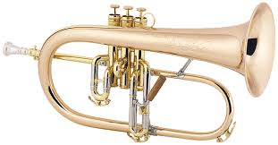 | bugel 1 2 |
| 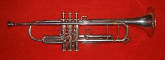 | trompet 1 2 3 4 |
| 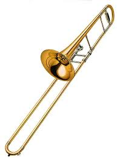 | trombone 1 2 3 4 |
| 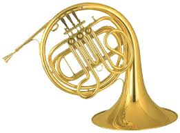 | hoorn 1 2 |
| 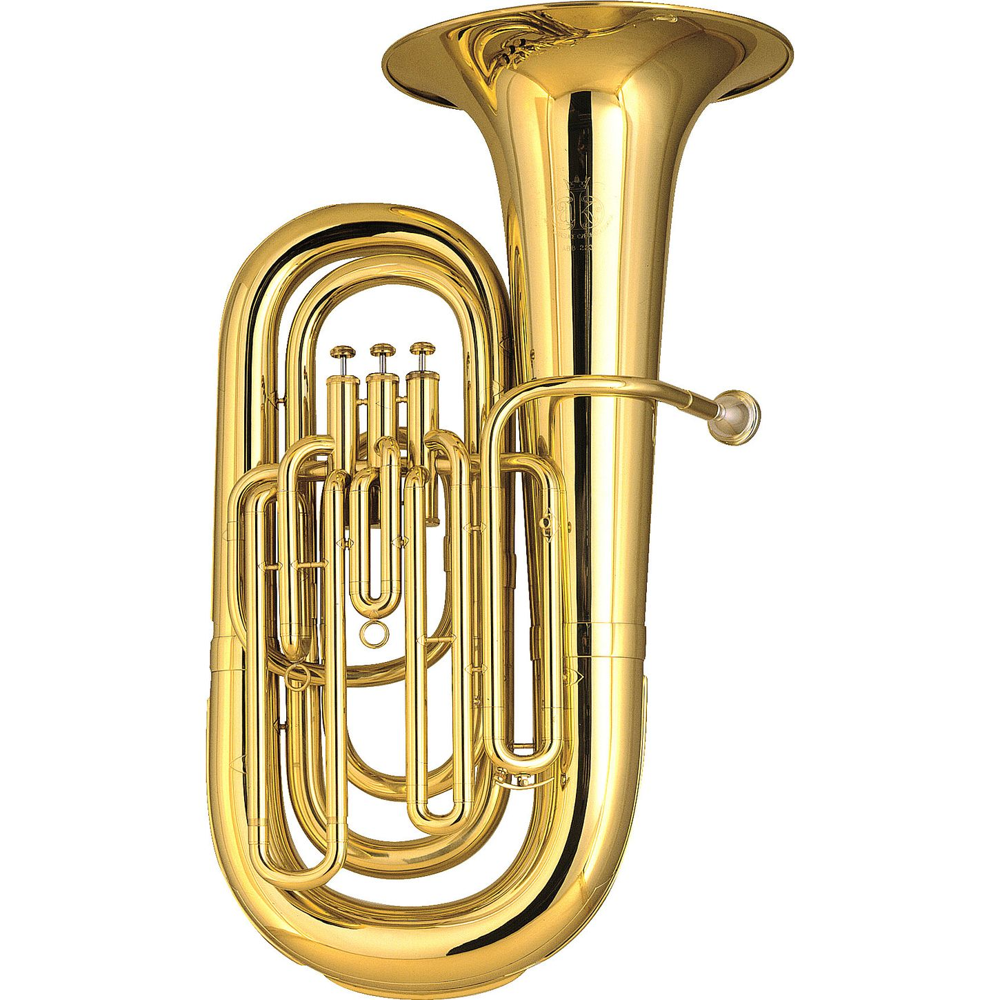 | tuba 1 2 3 |
| 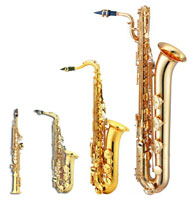 | saxofoon 1 2 3 4 5 |
| 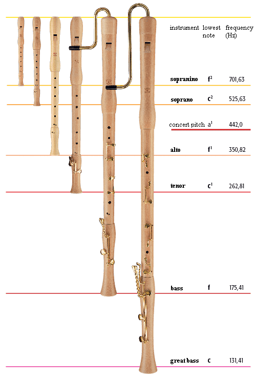 | blokfluit |
| 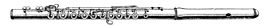 | dwarsfluit 1 2 3 4 |
| 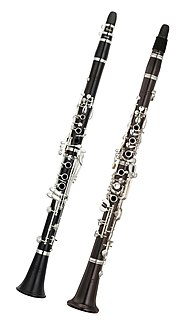 | klarinet 1 2 3 4 |
| 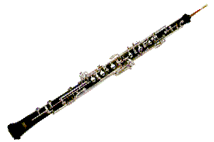 | hobo 1 2 3 |
| 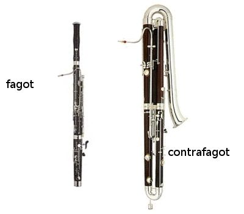 | fagot 1 2 3 |
Meer hier.